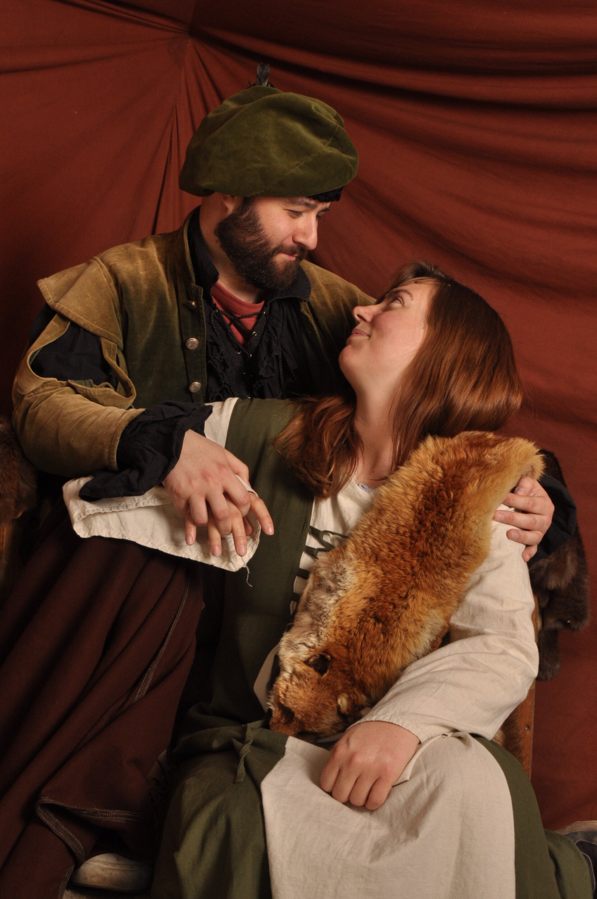

We're thrilled to celebrate our wedding with our closest friends and family on October 17th, 2026, at Mildenstein Castle. This page contains all the essential information you'll need for our special day.
Please take time to read through the location details, accommodation options, weather expectations, and gift preferences before submitting your RSVP. If you have any questions, please reach out using the email address provided in your invitation.
The wedding will take place at Mildenstein Castle in Leisnig, Germany. The castle has sat on a rocky outcrop above the Mulde River since at least 1046. It's now a museum with well-preserved medieval rooms including the Knight's Hall (where we'll be having the reception) and chapel.
The castle has been carefully restored and is comfortable to visit while maintaining its historical character. The views of the surrounding countryside are gorgeous, and should be particularly beautiful in the fall. We'll be celebrating in spaces that have hosted gatherings for nearly a thousand years!
Accessibility Note: The castle maintains its medieval character, which means there are stairs to reach both the ceremony and reception locations, plus an incline up to the main courtyard. A small freight elevator exists for supplies but cannot accommodate guests. Please let us know in your RSVP if you have mobility concerns.
You will, of course, be able to visit the museum sections of the castle. If you'd like to take part in a guided tour in English (or German), please let us know in your RSVP.
The castle is very kid-friendly, offering a number of games and activities especially for kids. There's even a really cool jousting game that we're sure the adults will love too!
The castle is about 2.5 hours from Berlin by car or 3 hours by train. From Leipzig, it's about 1 hour by either method. If arriving by train, note there's an uphill walk from Leisnig station to the castle (about 15 minutes), and taxis may not be readily available.
üìç View on Google MapsThere are a few small guesthouses in town that are quite affordable, though not particularly fancy.
Gasthof Zum Stiefel is right outside the castle gates (€40-80/night). Since it only has five rooms, we'll likely book it out completely and prioritize it for guests with mobility issues. Gästehaus am Markt is about a 10-minute walk (€80-90/night) and also only has a few rooms. Both likely only have German-speaking staff, so let us know in your RSVP if you'd like to stay at either place and we can help with bookings.
There are other options in town, but they're farther away and you'll likely need some German to book them. If you don't need to be right next to the castle, we'd recommend staying out of town where you'll have more options.
"Die Karls Bande" is our top recommendation if you'll have a car. It's a modern hotel outside a strawberry-themed amusement park. You don't need park tickets to stay there, but it's worth a visit, especially if you have kids along! It's about 20 minutes from the castle by car, costs around €120/night, and has English-speaking staff. We can arrange shuttles if there's enough interest.
Döbeln is just one train stop away (12 minutes) and has several hotels for around €100/night. You might find English-speaking staff there, though it's not guaranteed.
Note for Döbeln guests: The last train back to Döbeln leaves at 11pm, so you'll have some flexibility for the evening. We can also arrange shuttles to Döbeln if there's interest. Please mention your transportation preferences in your RSVP.
Leipzig is a major city about an hour away by train with lots of accommodation options starting around €80/night. It's easy to find hotels with English-speaking staff there.
Important for Leipzig guests: The last train back to Leipzig leaves at 9pm, which is quite early. If you're staying in Leipzig, you'll almost certainly need to arrange a car or pre-book a taxi. We might be able to arrange shuttles if there's significant interest. Please mention your transportation needs in your RSVP.
We don't recommend staying in Berlin the night before or after unless you have a car - the train timing is too tight and there's too much risk of delays. That said, there will be some space at our home for immediate family in the days before and after the wedding.
We can't predict the weather, but you should be prepared for it to be cold and/or rainy. The historical average temperature in Leisnig on October 17th is between 7°-15° Celsius or 44°-59° Fahrenheit. Most of the castle (including the ceremony and reception areas) has been renovated with underfloor heating and renewed insulation, so the interior should be comfortable no matter what.
Note that you'll need to walk outside briefly to move between different areas of the castle, including between the ceremony and reception locations. We recommend bringing a jacket or coat that you can easily put on and take off, and an umbrella just in case.
We don't have exact times committed yet, but here's the rough schedule (exact times will be confirmed closer to the date):
Early afternoon (around 2-3pm): Wedding ceremony begins. (It will be a short ceremony.)
Immediately after ceremony: Salutschuss, a celebration where cannons are fired in honor of the newlyweds!
Following the Salutschuss: Reception with dinner, drinks, and dancing in the Knights Hall.
Throughout the day: Feel free to explore the castle and museum before and after the ceremony.
We have the venue until 2am, but the bride and groom probably won't stay that late. If you're planning to celebrate until the early hours, please let us know in your RSVP so we can arrange late-night shuttle transportation for you. You really must leave by 2am.
We're asking for formal attire, i.e. dresses, ties, button-up shirts, etc. You don't need to break the bank on something expensive, but please don't show up in jeans and a t-shirt.
Given the castle setting, we'd also be delighted if anyone wants to wear medieval or Renaissance attire! This is completely optional and not expected at all, but if you have the inclination (and the costume), it would add to the atmosphere.
This is from the Easter Knight Festival in 2025 at the Spandau Citadel
If you don't bring medieval clothing but want to get some photos in period dress, the castle has some costumes available for photos. You can't wear these outside the designated photo area, but they're perfect for some fun castle pictures.
Practical note: While the interior floors are hard wood, you'll be walking on some cobblestones outside, so comfortable dress shoes are recommended. And remember to bring a jacket or coat for the cold and possible rain.
We know many of you are traveling far and spending a lot of money just to be with us on our special day. Your presence is truly the only present we need. Please don't feel any obligation to bring or send additional gifts. We genuinely mean this!
That said, there is something we'd love that costs nothing but would mean a lot to us: your favorite recipes. We both enjoy cooking and baking, and we'd love to create our own cookbook filled with recipes from the people we love most.
Every time we make one of your dishes, we'll think of you and the memories we share. It's a gift that keeps giving, much better than anything we could put on a registry. If we can, we'll bind them together into a physical cookbook and also create a digital version to share with everyone who is interested.
Please include the stories behind your recipes! Are they family traditions? Connected to special memories or people? Perfect for certain seasons or occasions? We want to know it all, as the context makes each recipe even more meaningful.
Keep in mind that the groom is vegetarian, so recipes where meat isn't the main focus work best (though we can adapt in most cases).
If you really feel compelled to bring something physical despite our protests, let us know and we can suggest a few specific items. (Like things that aren't easily available in Germany.) But honestly, the recipes will mean so much to us.
While the castle is beautiful, the medieval rooms have limited capacity, so we need to plan carefully for everyone's comfort. Please RSVP regardless of whether you're coming, not coming, or unsure - we need to hear from everyone! If you have a plus-one on your invitation but don't think you'll use it, please let us know as it might allow us to invite someone else. We can only accommodate the guests specified on your invitation due to space constraints.
Please RSVP as soon as possible so we can send out additional invitations if space permits. We need at least a "maybe" response by December 31st, 2025 at the latest.
To RSVP, please send us an email at the address that was in your invitation. (If we put it up on this site we'd get spammed.)
Everyone please include:
If you're planning to attend or are on the fence, also include:
Two days before the celebration at the castle, we'll have a civil ceremony at the Standesamt (civil registry office) in Berlin. In Germany, this legal ceremony is required to become officially married and is distinct from the celebration that we'll do at the castle. The civil ceremony is quite short and formal, conducted by a government official with just a few witnesses present. It's usually only immediate family, and it must be done in Berlin since that's where we're registered residents.
Think of it as getting our marriage license, but with a bit more ceremony than you'd have in the US. It's an interesting part of German wedding tradition where the legal and celebratory aspects are typically separated.
If you're part of the immediate family or wedding party, you're also invited to join us for this pre-wedding civil ceremony. If you need a place to stay in Berlin, you're welcome to stay with us as long as you're fine sleeping on a couch, sofa bed, or air mattress.
You may be required to get an ETIAS travel authorization to come from abroad, even as an American. You'll need to do this ahead of time, so check early to see what the requirements are. It's expected to begin in Q4 of 2026, so right in time for the wedding.
Germany uses the Euro. When you get here, make sure to get some cash - lots of places don't take cards at all, especially smaller restaurants, bakeries, and some shops. Many places that do take cards prefer EC cards (German debit cards) over credit cards. ATMs are widely available, but your bank may charge fees.
Many Germans speak English - they start learning it in third grade. Younger people generally speak it better. You don't need to know German to get by, but learning a few basic phrases is appreciated and polite. "Danke" (thank you), "Bitte" (please/you're welcome), and "Entschuldigung" (excuse me) go a long way.
Note that the wedding location is part of what was formerly East Germany, where people were more likely to learn Russian as a second language. People there still are less likely to know English, especially the older people. Berlin, being more international, has many more native English speakers and generally better English overall.
Public transit in Germany is excellent. Download the Deutsche Bahn app for long-distance trains. If you'll be here for a while, consider buying a "Deutschland Ticket" (then immediately cancel the subscription) - it covers everything except high-speed trains (IC and ICE). In Berlin, use the BVG app for local transit.
Important train tips: Long-distance train tickets don't include seat reservations - pay extra to guarantee a seat. There are no ticket gates, but you must have a valid ticket. Inspectors perform random checks, and fines can be up to several hundred euros. You can eat and drink on long-distance trains, but not on local trains, trams, or buses. Keep noise levels down.
While you're here, definitely try Döner - it's delicious German-Turkish street food (though very meat-heavy). As far as Leisnig goes, there's a good tavern right outside the castle with traditional German cuisine. German bakeries tend to have a very high floor when it comes to quality, and there are several in Leisnig near the castle. We can also recommend places in Berlin based on your preferences, but don't expect great Mexican food.
Tipping is typically 5-10% at sit-down places and you usually round up or tell the server the total you want to pay after they've given you the pre-tip total. If paying by card, they'll bring a card reader to you rather than taking your card away. But make sure you have cash for restaurants as they might not take card!
Germans are quite socially-minded. It's important to follow the rules and to not bother others. In particular, keep your volume low in public, especially on public transit.
Shops are generally closed on Sundays except for restaurants, some tourist areas like museums, and train stations. Quiet hours ("Ruhezeit") are typically 10pm-6am and Sunday afternoons - be extra careful to keep noise down during these times.
If you're traveling far for the wedding, consider staying longer to explore (and justify the plane ticket)!
The wedding is in October, and it's in Germany, so you might be interested in attending Oktoberfest. Despite the name, it actually starts in September and ends in early October. In 2026 it's expected to run from September 19th through October 4th, so if you want to attend you'll need to arrive quite a bit before the wedding. The main event is in Munich, and while you will find smaller festivities elsewhere, it really is mostly a Munich thing.
For Munich Oktoberfest: You'll definitely need reservations at beer tents, especially on weekends. Book through the official Oktoberfest website or individual tent websites starting in late spring. Without reservations, you can sometimes get in on weekday mornings, but it's risky. Expect to pay premiums for beer and food, double what you might pay elsewhere or at different times. It's crowded, loud, and touristy, but might be fun if that's your thing.
If you're more interested in October festivals closer to the wedding location, Saxony has several wine and harvest festivals throughout October. Dresden (about 1.5 hours from Leisnig) often has autumn markets and cultural events. The region also celebrates various local harvest festivals that are much more authentic and less touristy than Munich's Oktoberfest. Karls Erlebnisdorf, the amusement park whose hotel I recommended, also will have some fall theming around that time.
For travel to other European countries, check entry requirements and currencies (not everyone uses the Euro - Poland uses Zloty, for example). Sleeper trains between countries are comfortable and environmentally friendly, though slower than flying.
Wir freuen uns riesig darauf, unsere Hochzeit am 17. Oktober 2026 auf Burg Mildenstein mit unseren liebsten Freunden und Familie zu feiern. Auf dieser Seite findet ihr alle wichtigen Informationen zu unserem besonderen Tag.
Nehmt euch bitte die Zeit, die Informationen zu Ort, Unterkunftsmöglichkeiten, Wettererwartungen und Geschenkwünschen durchzulesen, bevor ihr eure Zusage abgebt. Falls ihr Fragen habt, meldet euch gerne unter der E-Mail-Adresse aus eurer Einladung.
Die Hochzeit findet auf Burg Mildenstein in Leisnig statt. Die Burg thront seit mindestens 1046 auf einem Felsvorsprung über der Mulde. Heute beherbergt sie ein Museum mit gut erhaltenen mittelalterlichen Räumen, darunter der Rittersaal, in dem unsere Feier stattfinden wird, und die Kapelle.
Die Burg wurde sorgfältig restauriert und ist komfortabel zu besichtigen, ohne dass dabei ihr historischer Charakter verloren geht. Die Aussicht auf die umliegende Landschaft ist wunderschön und sollte im Herbst besonders sehenswert. Wir feiern in Räumen, die seit fast tausend Jahren Gastgeber für Feste sind!
Hinweis zur Barrierefreiheit: Die Burg behält ihren mittelalterlichen Charakter, was bedeutet, dass es sowohl zu den Zeremonie- als auch zu den Feierorten Treppen gibt und man zum Haupthof einen Anstieg bewältigen muss. Ein kleiner Lastenaufzug ist vorhanden, kann aber keine Gäste befördern. Teilt uns bitte in eurer Zusage mit, wenn ihr Mobilitätsprobleme habt.
Ihr könnt natürlich auch die Museumsbereiche der Burg besuchen. Wenn ihr an einer Führung teilnehmen möchtet, gebt das bitte in eurer Zusage an.
Die Burg ist sehr kinderfreundlich und bietet verschiedene Spiele und Aktivitäten speziell für Kinder. Es gibt sogar ein richtig cooles Ritterspiel, das sicher auch den Erwachsenen gefallen wird!
Die Burg ist etwa 2,5 Stunden von Berlin mit dem Auto oder 3 Stunden mit dem Zug entfernt. Von Leipzig aus seid ihr etwa eine Stunde unterwegs, egal, ob ihr das Auto oder den Zug nehmt. Bei Anreise mit dem Zug bitte beachten, dass es einen etwa 15-minütigen Fußweg bergauf vom Bahnhof Leisnig zur Burg gibt und Taxis möglicherweise nicht leicht verfügbar sind.
üìç Auf Google Maps anzeigenIn der Stadt gibt es einige kleine Pensionen, die recht g√ºnstig, aber nicht besonders schick sind.
Gasthof „Zum Stiefel” liegt direkt vor den Burgtoren (€40-80/Nacht). Da er nur fünf Zimmer hat, werden wir ihn wahrscheinlich komplett buchen und Gästen mit Mobilitätsproblemen Vorrang geben. Gästehaus am Markt ist etwa 10 Minuten zu Fuß entfernt (€80-90/Nacht) und hat ebenfalls nur wenige Zimmer.
Es gibt andere Unterkünfte in der Stadt, die jedoch weiter weg sind. Wenn ihr nicht direkt neben der Burg übernachten müsst, empfehlen wir euch, außerhalb der Stadt zu buchen, wo ihr mehr Auswahl habt.
"Die Karls Bande" ist unsere Top-Empfehlung, wenn ihr ein Auto habt. Es ist ein modernes Hotel außerhalb Karls Erlebnisdorf. Ihr braucht keine Parktickets um dort zu übernachten, aber ein Besuch lohnt sich, besonders wenn ihr Kinder dabei habt! Das Hotel ist etwa 20 Minuten von der Burg mit dem Auto entfernt, kostet um die €120/Nacht und hat englischsprachiges Personal. Wir können Shuttles organisieren, wenn es genügend Interessenten gibt.
Döbeln ist nur eine Zugstation entfernt (12 Minuten) und hat mehrere Hotels für etwa €100/Nacht.
Hinweis für Döbeln-Gäste: Der letzte Zug zurück nach Döbeln fährt um 23 Uhr, also habt ihr etwas Flexibilität für den Abend. Wir können auch Shuttles nach Döbeln organisieren, sofern es genügend Interessenten gibt. Bitte teilt uns eure Transportwünsche in eurer Zusage mit.
Leipzig ist etwa eine Stunde mit dem Zug entfernt und bietet viele Unterkunftsmöglichkeiten ab etwa €80/Nacht.
Wichtig für Leipzig-Gäste: Der letzte Zug zurück nach Leipzig fährt bereits um 21 Uhr, was ziemlich früh ist. Wenn ihr in Leipzig übernachtet, müsst ihr wahrscheinlich ein Auto organisieren oder ein Taxi vorbestellen. Wir können eventuell Shuttles organisieren, sofern es genügend Interessenten gibt. Teilt uns eure Transportbedürfnisse bitte in eurer Zusage mit.
Wir empfehlen nicht, in Berlin die Nacht vor oder nach der Hochzeit zu übernachten, es sei denn, ihr habt ein Auto, da die Zugzeiten zu knapp sind und es zu viele Risiken für Verspätungen gibt. Allerdings gibt es bei uns zu Hause Platz für die engste Familie in den Tagen vor und nach der Hochzeit.
Wir können das Wetter nicht vorhersagen, aber ihr solltet darauf vorbereitet sein, dass es kalt und/oder regnerisch werden könnte. Die historische Durchschnittstemperatur in Leisnig am 17. Oktober liegt zwischen 7°-15°. Der größte Teil der Burg (einschließlich der Zeremonie- und Feierbereiche) wurde mit Fußbodenheizung und neuer Isolierung renoviert, sodass es im Inneren bei jedem Wetter angenehm sein sollte.
Beachtet bitte, dass ihr kurz nach draußen gehen müsst, um zwischen den verschiedenen Bereichen der Burg, einschließlich der Zeremonie- und Feierorte, zu wechseln. Wir empfehlen, eine Jacke oder einen Mantel mitzubringen, die bzw. den ihr leicht an- und ausziehen könnt, sowie einen Regenschirm für alle Fälle.
Wir haben noch keine genauen Zeiten festgelegt, aber hier ist der grobe Ablauf (die genauen Zeiten werden näher zum Datum bestätigt):
Früher Nachmittag (etwa 14-15 Uhr): Beginn der Trauungszeremonie. (Es wird eine kurze Zeremonie sein.)
Direkt nach der Zeremonie: Salutschuss, eine Feier, bei der Kanonen zu Ehren des Brautpaares abgefeuert werden!
Nach dem Salutschuss: Feier mit Abendessen, Getränken und Tanzen im Rittersaal.
Den ganzen Tag über: Ihr könnt die Burg und das Museum vor und nach der Zeremonie erkunden.
Wir haben die Location bis 2 Uhr morgens, aber Braut und Bräutigam werden aber wahrscheinlich nicht so lange bleiben. Wenn ihr plant, bis in die frühen Morgenstunden zu feiern, lasst es uns bitte in eurer Zusage wissen, damit wir einen Nacht-Shuttle für euch organisieren können.
Wir bitten um festliche Kleidung, also zum Beispiel Kleider, Krawatten und Hemden mit Knöpfen. Ihr müsst nicht viel Geld für etwas Teures ausgeben, aber bitte kommt nicht in Jeans und T-Shirt.
Angesichts der Burgkulisse würden wir uns auch freuen, wenn jemand mittelalterliche oder Renaissance-Kleidung tragen möchte. Das ist jedoch völlig optional und wird nicht erwartet. Wenn ihr Lust (und das Kostüm) habt, würde es zur Atmosphäre beitragen.
Vom Oster-Ritterfest 2025 in der Zitadelle Spandau
Wenn ihr keine mittelalterliche Kleidung mitbringt, aber trotzdem Fotos in historischen Gewändern machen möchtet, stellt die Burg einige Kostüme zur Verfügung. Diese dürfen nicht außerhalb des dafür vorgesehenen Fotobereichs getragen werden, sind aber perfekt für lustige Burgbilder.
Praktischer Hinweis: Während die Innenböden aus Hartholz bestehen, werdet ihr draußen auf Kopfsteinpflaster laufen. Bequeme Schuhe sind also empfehlenswert. Und denkt daran, eine Jacke oder einen Mantel für die Kälte und möglichen Regen mitzunehmen.
Wir wissen, dass viele von euch eine weite Reise auf sich nehmen und viel Geld ausgeben, nur um an unserem besonderen Tag bei uns zu sein. Eure Anwesenheit ist wirklich das einzige Geschenk, das wir uns wünschen. Bitte fühlt euch nicht verpflichtet, zusätzliche Geschenke mitzubringen oder zu schicken. Das meinen wir ernst!
Es gibt allerdings etwas, das wir uns wünschen würden, das nichts kostet, uns aber viel bedeuten würde: eure Lieblingsrezepte. Wir kochen und backen beide gerne und würden gerne ein eigenes Kochbuch mit Rezepten von den Menschen erstellen, die wir am meisten lieben.
Jedes Mal, wenn wir eines eurer Gerichte zubereiten, werden wir an euch und die gemeinsamen Erinnerungen denken. Es ist ein Geschenk, das immer wieder Freude bereitet und viel besser ist als alles, was wir auf eine Wunschliste setzen könnten. Wenn möglich, werden wir die Rezepte in einem physischen Kochbuch binden und auch eine digitale Version erstellen, die wir mit allen Interessierten teilen.
Bitte fügt die Geschichten hinter euren Rezepten hinzu! Sind es Familientraditionen? Sind sie mit besonderen Erinnerungen oder Menschen verbunden? Sind sie perfekt für bestimmte Jahreszeiten oder Anlässe? Wir wollen alles wissen, denn der Kontext macht jedes Rezept noch bedeutungsvoller.
Bedenkt bitte, dass der Bräutigam Vegetarier ist. Am besten funktionieren daher Rezepte, bei denen Fleisch nicht im Mittelpunkt steht (obwohl wir in den meisten Fällen Anpassungen vornehmen können).
Wenn ihr euch trotz unserer Proteste wirklich gedrängt fühlt, etwas mitzubringen, lasst es uns wissen, dann können wir ein paar Dinge vorschlagen. Aber ehrlich gesagt würden uns die Rezepte so viel bedeuten.
Die Burg ist zwar wunderschön, aber die mittelalterlichen Räume haben nur begrenzt Platz, weshalb wir sorgfältig für den Komfort aller planen müssen. Bitte gebt uns eure Zusage, egal, ob ihr kommt oder nicht. Wir müssen von allen hören! Wenn ihr eine Begleitperson eingeladen habt, diese aber nicht mitbringen werdet, lasst es uns bitte wissen. So können wir eventuell jemanden anderen einladen. Aufgrund der Platzbeschränkungen können wir nur die auf eurer Einladung angegebenen Gäste unterbringen.
Bitte gebt eure Zusage so bald wie möglich ab, damit wir bei ausreichendem Platzangebot zusätzliche Einladungen verschicken können. Wir benötigen bis spätestens 31. Dezember 2025 mindestens eine „Vielleicht“-Antwort.
Schickt uns eure Zusage bitte per E-Mail an die Adresse, die in eurer Einladung angegeben war.
Bitte gebt alle an:
Falls ihr plant teilzunehmen oder noch unentschlossen seid, gebt bitte auch an:
Zwei Tage vor der Feier auf der Burg werden wir unsere standesamtliche Trauung im Berliner Standesamt haben.
Wenn ihr zur engsten Familie oder zur Hochzeitsgesellschaft gehört, seid ihr auch zur standesamtlichen Trauung eingeladen. Falls ihr einen Platz zum Übernachten braucht, könnt ihr gerne bei uns bleiben, sofern es euch nichts ausmacht, auf einer Couch, einem Schlafsofa oder einer Luftmatratze zu schlafen.